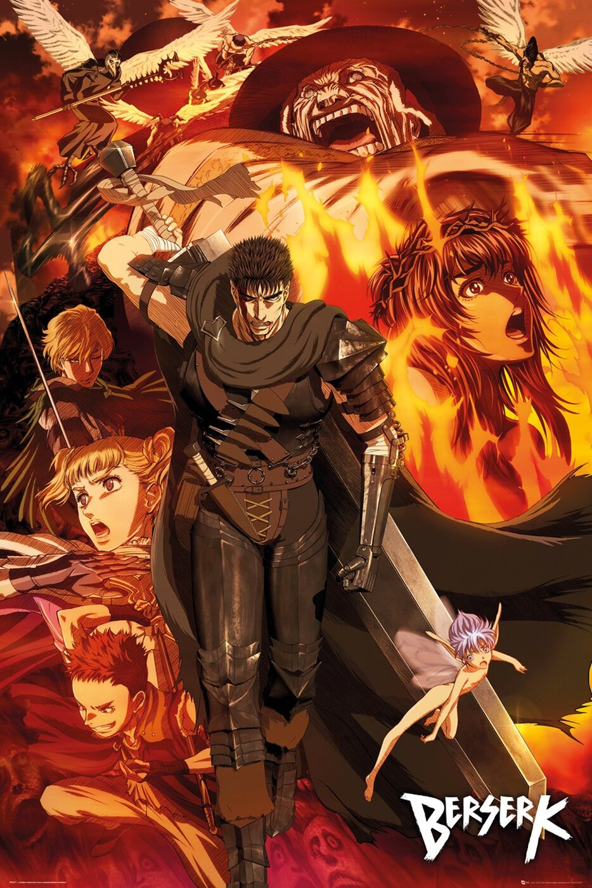
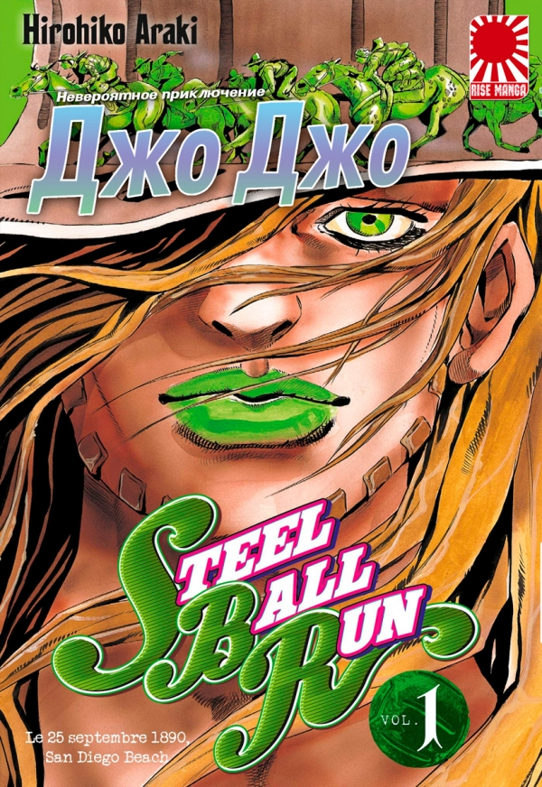
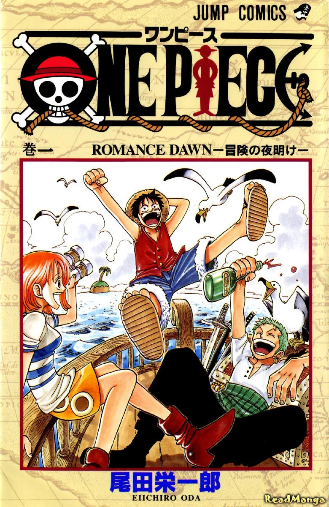

МАНГА ОТСОРТИРОВАННАЯ ПО РЕЙТИНГУ

1. Берсерк / Berserk
Рейтинг - 9.41
Информация:
Тип: Манга
Тома: 41
Главы: 380
Статус: с 25 авг. 1989 г. по 10 сент. 2021 г.
Жанры: Сейнен Экшен Приключения Драма Фэнтези Ужасы Сверхъестественное Демоны Военное Психологическое
Лицензировано: XL Media
Описание:
Наёмник Гатс, по прозвищу Чёрный Мечник, странствует по магическому
королевству Мидланд, вооружившись двухметровым мечом «Убийцей Драконов» и уничтожая на своём пути
полчища демонов, охотящихся на него. Не жалея ни себя, ни тех, кто попадается ему под руку, он
неустанно движется вперёд, ведомый только безудержной жаждой мести. Но откуда она берёт своё начало?
Какое тяжкое бремя несёт на своих плечах Гатс? И есть ли шанс на простое светлое будущее у того, кто
воочию повидал сам ад?..«Берсерк» — это тёмная и печальная сага о неистовых жестоких сражениях,
недостижимых мечтах, дружбе и предательстве, а также печальной судьбе одного человека.
--------------------------------------------------------------------------------------------------------------------------------------------------------------------------------------------------

2. Невероятное приключение ДжоДжо — Часть 7: Гонка «Стальной шар» / JoJo no Kimyou na Bouken Part 7: Steel Ball Run
Рейтинг - 9.25
Информация:
Тип: Манга
Тома: 24
Главы: 96
Статус: в 2004-2011 гг.
Жанры: Экшен Приключения Ужасы Детектив Сверхъестественное Исторический
Описание:
На Диком Западе начинается величайшая гонка в мире. Тысячи людей выстраиваются очередями в Сан-Диего,
чтобы проехать более шести тысяч километров и получить шанс выиграть главный приз в пятьдесят миллионов
долларов. С окончанием эры скачек участникам разрешается использовать любой вид транспорта,
который они пожелают. Участники соревнований должны будут вытерпеть изнурительные условия, путешествуя
до ста километров в день через неизведанные пустоши. Гонка «Стальной шар» — действительно уникальное в своём роде
событие.
---------------------------------------------------------------------------------------------------------------------------------------------------------------------------------------------------

3. Ван-Пис / One Piece
Рейтинг - 9.16
Информация:
Тип: Манга
Статус: выходит с 22 июля 1997 г.
Жанры: Сёнен Экшен Приключения Комедия Фэнтези Супер сила
Описание:
Эра пиратов начинается! Гол Д. Роджер, называемый «Королём Пиратов», сильнейший из них всех, известен тем, что отправился на Гранд Лайн и был
пойман Мировым правительством. Своей смертью он изменил мир — его последними словами перед казнью были слова призыва на Гранд Лайн, ведь именно
там он спрятал величайшее сокровище мира — Ван-Пис. Тысячи людей бросили всё, что имели, и стали пиратами, заворожённые мечтой найти спрятанное
сокровище, которое обещало исполнение всех мыслимых желаний. А пират, нашедший его, станет новым «Королём Пиратов».
Семнадцатилетний Монки Д. Луффи бросает вызов судьбе — он собирается найти Ван-Пис и стать «Королём Пиратов»! Вопреки ожиданиям, у него не деревянная
нога, целы все зубы и он ненормально честен. Голоден он тоже, кстати, ненормально. Несмотря на то, что Луффи пират, грабить и терроризировать
деревни — не его занятие, ведь впереди ждёт Гранд Лайн! Но перед тем, как отправиться в опасное путешествие, необходимо заполучить хороший корабль и
верную команду. Не каждый подойдёт Луффи, в команде будущего «Короля» должны оказаться лучшие из лучших. Ведомый детскими воспоминаниями о
пирате Шанксе, он собирается на поиски товарищей, с которыми отправится в великое путешествие — курс на Гранд Лайн и Ван-Пис!